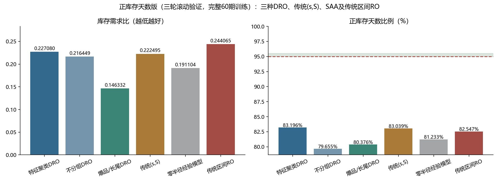
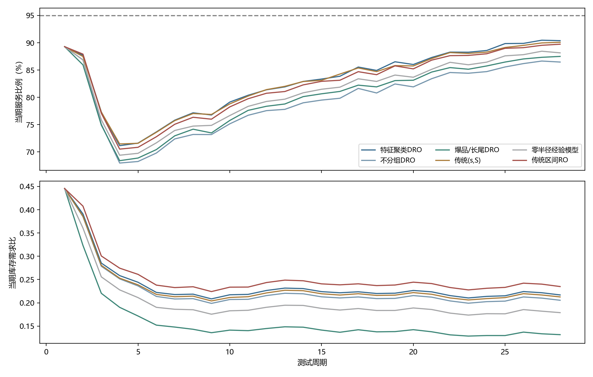
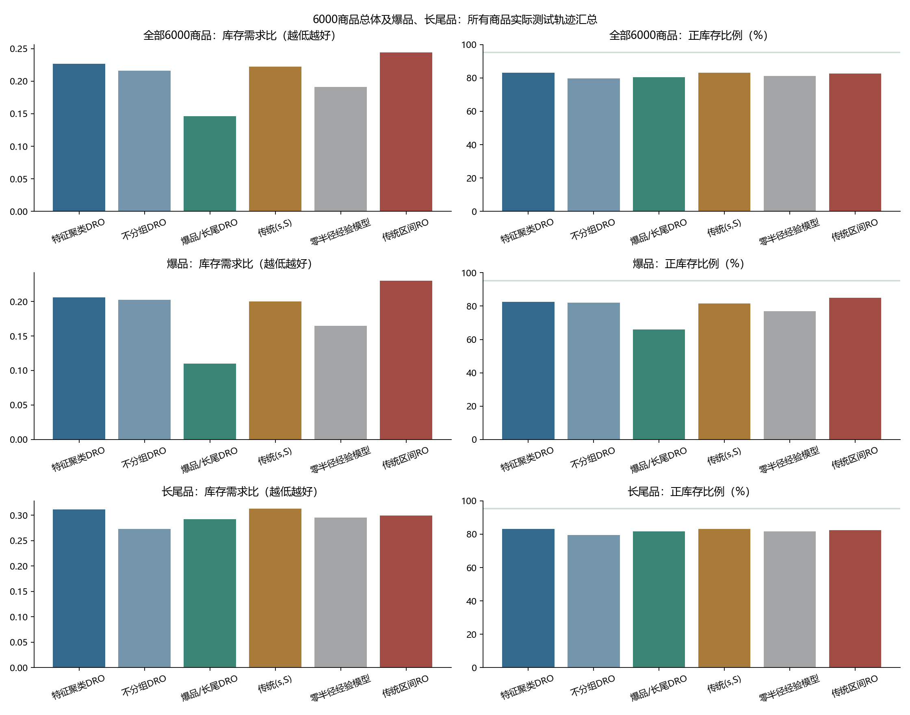

完整6000商品×28天测试。服务要求：正库存商品天比例95%–95.5%。
选参：1–24期拟合/25–36期验证、1–36/37–48、1–48/49–60，按36期合并成绩冻结参数；之后用全部60期重新拟合，在独立测试Excel的28期评估，测试Period_1重新起算。
库存需求比＝累计期末库存/累计需求，越低越好。RO采用需求区间最坏情形，Γ仅在训练集选取。
| 方法 | 需求满足率 | 正库存天数比例 | 库存需求比↓ | 损失需求 |
|---|---|---|---|---|
| 特征聚类DRO | 97.6735% | 83.1958% | 0.227080 | 2104668.0 |
| 不分组DRO | 97.5164% | 79.6554% | 0.216449 | 2246758.0 |
| 爆品/长尾DRO | 95.7267% | 80.3762% | 0.146332 | 3865834.0 |
| 传统(s,S) | 97.5449% | 83.0393% | 0.222495 | 2221009.0 |
| 零半径经验模型 | 97.0384% | 81.2333% | 0.191104 | 2679209.0 |
| 传统区间RO | 97.8911% | 82.5470% | 0.244065 | 1907800.0 |
总体指标使用全部6000商品，分组指标使用全部480种爆品、全部5520种长尾品。95%–95.5%的选参约束作用于总体。


